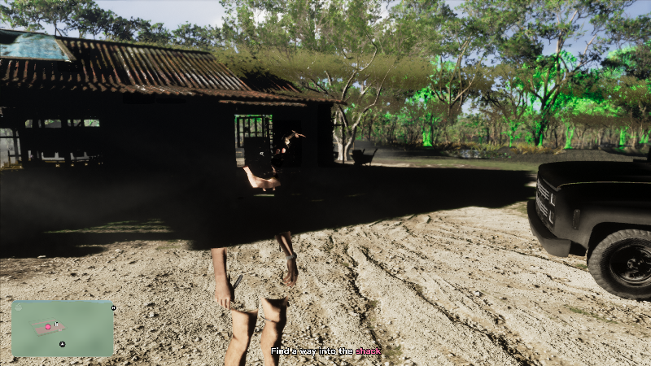

角色爬上了木屋屋顶
在木屋另一侧，玩家先后两次向前推动摇杆并按住 A。随后镜头从上方俯看波纹铁皮屋顶，屋檐外能看到地面。画面中的目标仍是“想办法进入木屋”。 查看屋顶与院子 →


现在，17 条文件队列都会等到游戏主动提交。第一个快艇目标在 210.685 秒后出现。从开始到任务失败，G17 的目标写入失败次数为零。此前 G16 在相同模式下还没进入快艇操控就已有 2,156 次写入失败。
游戏读到了满油门，随后显示发动机受损，并报告“卡尔掉下了船”。G18 在另一块 GPU 上复现了同一失败。营地里，玩家已经爬上木屋屋顶。
查看快艇实测结果 →在木屋另一侧，玩家先后两次向前推动摇杆并按住 A。随后镜头从上方俯看波纹铁皮屋顶，屋檐外能看到地面。画面中的目标仍是“想办法进入木屋”。 查看屋顶与院子 →
游戏画面中可见阳光下的屋顶、窗户、车辙和一辆停放的皮卡。院子里横着大片黑块，角色上半身大部分缺失。屏幕上的目标仍是寻找进屋的办法。 查看阳光下的院子 →
G18 的任务失败画面再次写着“卡尔掉下了船”。另一次检查发现，用来读取船体变换的工具对数据间距的判断有误。修正后的读取方法已通过独立测试，任务失败的原因仍待确认。
第一次失败后，游戏给出了跳过检查点的选项。选择跳过后，目标变为“追上飞机”。油门踩到底之前，航程显示 0.45 英里；持续十秒后，在后续截图中仍是 0.45 英里。目前还未能确认可持续驾驶快艇完成追逐。
游戏窗口中，角色正对着双扇木门。深色图块仍遮住了角色上半身和入口。当前目标依然是“想办法进入木屋”，尚未确认已经进屋或见到唐尼。 查看双扇木门 →
以下为各项工作的分工和最近确认时间，均为 UTC。
对比 G17 的存储写入结果与此前失败的提交模式，单独追踪快艇任务的失败原因。
使用游戏自带的跳跃／攀爬按键爬上屋顶。当前目标仍是寻找进屋的办法。
在另一块 GPU 上复现了 G17 的快艇任务失败。修正了读取船体变换的方法，并已用受控输入验证，仍待游戏实测。
已将 92 项水面输出和 150 个遮挡查询数据字与 G16 的 GPU 实测结果逐一对比，全部一致。
已确认在测试的两种网格尺寸下，原版水面高度查询都会读取两份模拟输出。
对比了任务实际用到的 140 个计算着色器。两个版本都成功创建了 134 条管线，实机画面效果还有待测量。
核对两张实机截图、检查点顺序和步行测量结果，更新中英文记录。
已交付部分页面复制优化和流式纹理改动。在一次混合负载回放中，速度提高到原来的 1.92 倍，输出一致。13 项纹理及资源归属检查全部通过。
每 30 分钟查看相关项目的改动。已定位 180 次光照绘制共用的输入。
每小时检查其他实现。最近一次对比表明，目前适合继续使用 VIctory。
已完成内存边界复核和四项 CPU 检查，下一次包内容变更后再复核。